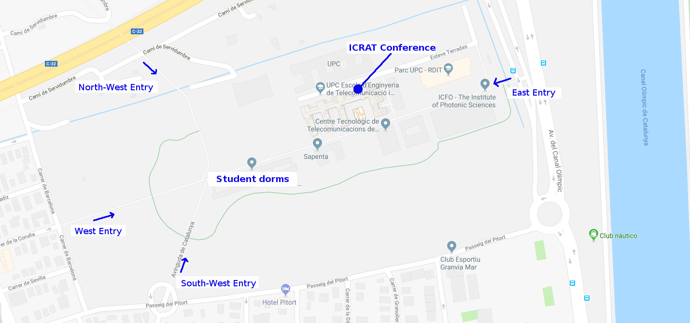
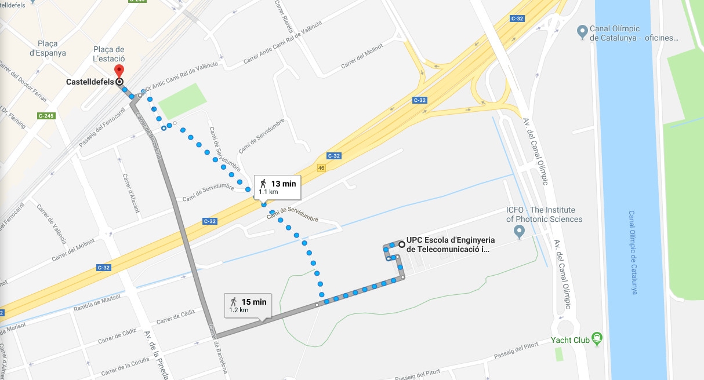

If you are staying close to Plaça Espanya or Plaça Universitat in Barcelona city, you could also take the (new) E95 bus (make sure you take the E "Express" one and not the L95), which goes directly from Barcelona to Castelldefels. This would be more convenient than taking the commuter train. The first stop when arriving in Castelldefels is the one for the UPC Campus (East Entry). More details on its route and timetable can be found here: http://www.baixbus.cat/es/linea-autobus-e95
The venue of the ICRAT 2018 conference is in the Telecommunications and Aerospace Engineering School of Castelldefels (Escola d’Enginyeria de Telecomunicacions i Aeroespacial de Castelldefels – EETAC), which is located in the UPC – BarcelonaTECH Campus in Castelldefels, around 20km south west of Barcelona.
Address: Esteve Terradas, 7, 08860 Casteldefels, Barcelona (Catalonia).
The map below shows the overall view of the campus, which is a pedestrian area and has four main entrances. The student’s dorms are located in the same Campus and at a 2-minute walk to the conference venue.

1) By train:
For those staying in Barcelona or Sitges, this is the best option.
a) From Barcelona:
there are 4 train stations in Barcelona from where it is possible to reach Castelldefels without train transfer (see figure below):
- Barcelona-Sants (Lines R2 and R2Sud)
- Barcelona-Passeig de Gràcia (Lines R2 and R2Sud)
- Barcelona-El Clot Aragó (Line R2)
- Barcelona-Estació de França (Line R2Sud)
Take the Lines R2 or R2Sud with terminus in “Castelldefels”, “Vilanova i la Geltrú” or “Sant Vicenç de Calders” and get off in “Castelldefels” main train station (and not “Castelldelfels Platja”, which is the next station!). Travel time is 20-30 min. The ticket price corresponds to the Fare Zone 1, We recommend you to buy a T-10 card with 10 journeys (and can be used by more than one person), which costs around 10 Eur.
b) From Sitges:
take the R2Sud line with direction “Barcelona Estació de França” or “Barcelona Passeig de Gràcia” and get off in “Castelldefels” main train station (and not in “Castelldefels Platja”, which is the station before!). The travel time is around 15 min. The ticket price, however, corresponds to the Fare Zone 3 (more expensive than from Barcelona).
For information regarding the train schedules check the following website http://rodalies.gencat.cat/en/horaris/
From the Castelldefels train station to the campus:
After exiting the train station turn left and turn left again down the stairs in order to cross the underground corridor below the train tracks. Cross the street and go straight ahead (you will see a parking lot on your right). You will cross then a pedestrian bridge above the highway and you will reach the campus by its North-West entrance.

2) By taxi or car: this is a good option for those coming from the airport or if staying in the area if you are too far to walk or if the train is not convenient.
Since the Castelldefels Campus is relatively new, it might happen that your taxi driver might not know where it is, or (s)he might insist on bringing you to the UPC main campus in Barcelona downtown. In such a case, tell the taxi driver that you are going to the campus next to the “Olympic Channel” in Castelldefels. This is a landmark known by any taxi driver and will avoid any confusion. The taxi driver should take the same highway exit as if going to the Olympic Channel, which lies to the East of the Campus.
Once in the Campus, you will have a 2-minute walk to the university entrance from the university public parking lot. If you come with your own car, you can leave the car there too at no cost.